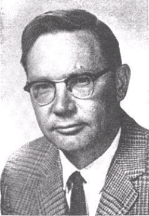

James McDonald
Atmospheric physicist, 1920 to 1971

A University of Arizona physicist who became the leading scientific voice arguing UFOs deserved serious study. He testified at the 1968 House symposium and criticized both Blue Book and the Condon Report. 1
Open in the interactive Watcher
Related
- House UFO symposium Testified at the 1968 symposium
- Project Blue Book Criticized Project Blue Book
Sources
- James E. McDonald Wikipedia